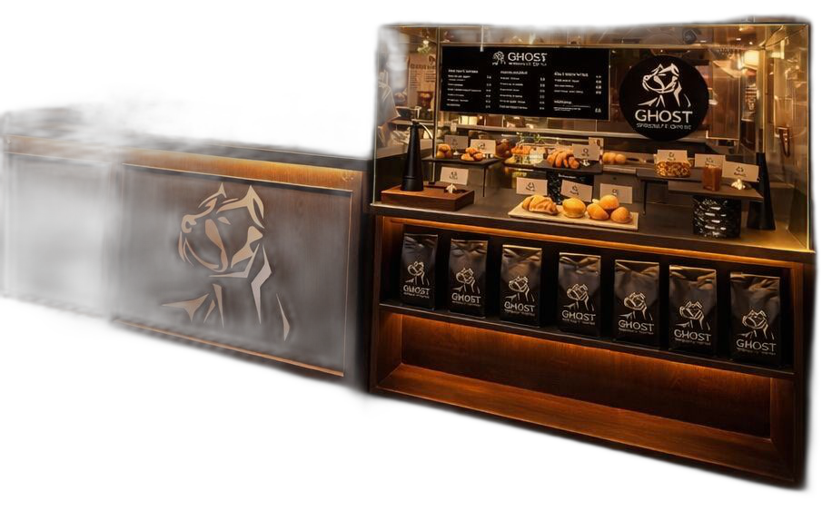

85+
Puntaje SCA
Specialty Coffee · Cali

Del origen al ritual.
Nuestra tienda es un refugio de café de especialidad en Cali: madera, concreto y luz cálida que abraza cada extracción. Microlotes colombianos SCA 85+, curados de distintos territorios y una barra donde el ritual se ve — y se siente.
85+
Puntaje SCA
1.900m
Altitud promedio
48–72h
Desgasificación
100%
Trazabilidad
Nuestra tienda
Un espacio íntimo donde la especialidad se vive con elegancia: madera oscura, concreto expuesto y luz ámbar que acentúa cada taza. No es un café cualquiera — es un refugio diseñado para que el ritual respire.
Experiencia
Cada detalle — desde la luz sobre la barra hasta la nota de cata en tu bebida — refuerza que aquí el proceso es el producto. Tostión artesanal, origen verificable y servicio sin concesiones.
Elegancia en cada extracción
Espresso, V60, Chemex y Nitro Cold Brew bajo luz cálida. Barra abierta donde cada taza se prepara frente a ti, con notas de cata impresas.
Artesanal en Cali
Control de curva exacto por lote. Desgasificación 48–72 horas. Café fresco con perfil documentado.
Colombia · Microlotes
Huila, Nariño, Cauca, Tolima y más. 1.400–2.200 msnm. Gesha, Bourbon, Castillo, Caturra y Papayo en procesos lavado, natural, honey y anaeróbico.
Bolsa 250 g con QR
Empaque con trazabilidad QR. Kits barista y merch. Lleva el ritual a casa.
Retail
Lleva el ritual a casa: microlotes de distintos territorios colombianos, tostados en pequeños batches y presentados con la misma elegancia que encuentras en nuestra barra.
$45.000 / 250 g
$72.000 / 250 g
$48.000 / 250 g
Historia
Ghost conecta el origen con el ritual de la taza. Curamos café de especialidad de toda Colombia: cada lote tiene territorio, productor y presencia. Elegancia que no necesita gritar.
Conoce GhostVen a vivir la experiencia: luz cálida, barra abierta y café de especialidad sin atajos.
Contactar